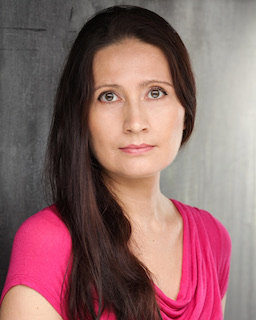

|  | 🔥Liliya WardRussian and English tutor in London I am a lecturer and researcher with over 11 years of experience in higher education (Russia) and I am an experienced teacher of Russian and English working in London for 14 years. I was born in Russia, in the city of Kazan. I studied Russian and English Philology at Kazan University (Russia) and obtained my doctoral degree in Linguistics in 2000. I also have an MSc in Cognitive Neuroscience from the University College London. I have been a language teacher for 25 years. After graduating I started working as a lecturer at Kazan university teaching at the Department of the Romance and Germanic Languages. After moving to the UK in 2008, I started working as a private Russian tutor teaching Russian as a foreign language. In my free time, I enjoy writing poetry and plays, I am also engaged in acting and love singing and being creative. Connect with me on LinkedIn here |
| Dates | Work place | Position |
|---|---|---|
| Oct 2021 – Present | Russian Language Centre, London, UK | Teacher of Russian, self-employed |
| Sep 2021 – Mar 2022 | Kazan Federal University, Kazan, Russia. Institute of Philology & Intercultural Communication, Department of Theory and Practice of TFL | Senior Lecturer, full-time |
| Sep 2008 – Present | Just Russian Language Tuition and Consultancy, London, UK | Russian & English Tutor, self-employed |
| Nov 2015 - Jan 2016 | CompactGTL Ltd, London, UK | Personal assistant to CEO, part-time |
| Sep 2014 – Aug 2015 | Kazan Federal University, Kazan, Russia. Institute of Philology & Intercultural Communication, Department of Modern Russian Language & Teaching Methodology | Senior Lecturer, part-time |
| Sep 1997 – Aug 2008 | Kazan State University, Kazan, Russia. Faculty of Philology, Department of Romance and Germanic Languages | Lecturer to Senior Lecturer, full-time |
| ⭐️⭐️⭐️⭐️⭐️ | |
| ⭐️⭐️⭐️⭐️ | |
| ⭐️⭐️⭐️⭐️ | |
| ⭐️⭐️⭐️ | |
| ⭐️⭐️ |